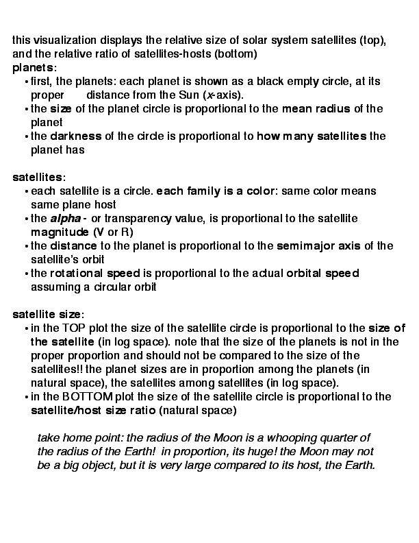

: https://github.com/fedhere/satellitesizes
: https://github.com/fedhere/satellitesizes

|
 |
|
In October I was twitting/blogging about the partial solar eclipse for the
The Huffington Post (so much fun!). I pointed out the moon is just the right size and distance for total eclipses to happen! I will be anti-Copernican
for a second
and just say it: this makes the Earth a very entertaining place to inhabit! The projected size of our moon on the sky is nearly identical to the projected size of the Sun: both about 30 arcminutes. Which means that when they align just right the moon covers the Sun disk almost exactly, leaving us with a terrific view of the Sun's corona (schedule your travel for the total eclipse of 2017!). Not only that, but it is just the right size to have TOTAL eclipses sometimes, and ANNULAR eclipses some other times, depending on where it is on its orbit. And it won't be like this forever, as the moon is slowly receding from the Earth (watch this video by my awesome friend Lucianne Walkowicz explaining why): it used to be too close for annular eclipses, and in a billion years it will be too small for total eclipses at all! In the viz you can see the relative size of the planets and their moons in orbit. the moon is not the biggest satellite in the Solar System (top plot), but it is the largest compared to the size of host planet - the Earth (bottom plot, the other large satellite in this plot is Charon, orbiting Pluto... but Pluto, sorry, is . Don't be sad about it: it is no longer the shrimp of planets, but one of the largest minor planets. |
maintained by fbb -- all rights reserved
{kind=link}
{kind=link}
{kind=link}